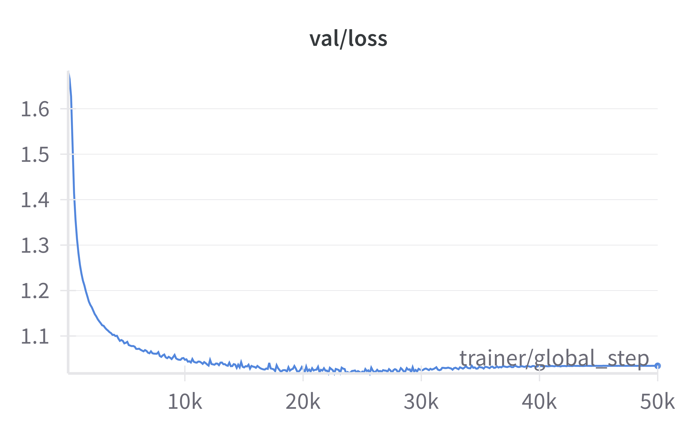
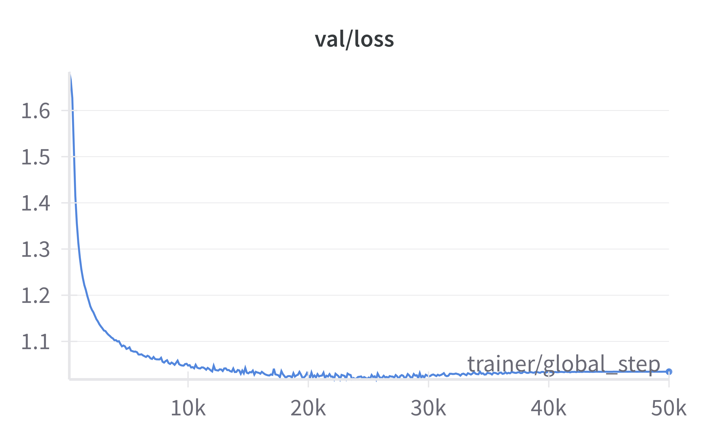

Use Lightning and Hydra to train your neural networks
Dexiong Chen / 2025-02-24
TL;DR: A tutorial for training a Llama model on protein sequences from scratch with less than 500 lines of code.
Table of contents
Deep learning research is moving at an incredible pace, and so are the tools that support rapid experimentation. In this post, we’ll explore how to combine PyTorch Lightning and Hydra to streamline the training of a deep neural network—in our case, a Llama model trained on protein sequences, which will allow for protein sequence generation via next amino acid prediction. We’ll also integrate components from Hugging Face to leverage state-of-the-art language model architectures.
Why protein sequences and Llama?
Protein sequences, while traditionally the domain of bioinformatics, have recently garnered attention as sequences that can benefit from language-modeling techniques (see e.g. ESM and ProGen). By treating amino acids like tokens and protein chains like sentences, we can explore the adaptability of models like GPT or Llama—originally designed for natural language—to capture meaningful patterns in proteins and generate new sequences.
Getting started
Before diving into code, install the required packages:
pip install torch torchvision lightning hydra-core transformers fair-esm
This setup gives you:
- PyTorch Lightning for structured and simple training pipelines.
- Hydra for managing configurations.
- Transformers (Hugging Face) for the Llama architecture.
- ESM for protein sequence tokenizers.
I use micromamba for package management, but feel free to use your preferred tool.
Project structure
The repository for a project using Hydra and Lightning follows a clean, modular structure. Generally, I have two principal directories, one for the Hydra configuration files and the other one for the Python code. The scripts for training and inference are in the root path.
.
├── config/ # Hydra configuration files
│ ├── train.yaml
│ └── ...
├── prollama/
│ ├── data/ # Dataset classes
│ │ └── ...
│ └── model.py # Our Pytorch Lightning model
├── train.py # Training script
└── generate.py # Generation script
Building the model pipeline
Data preparation
As Lightning largely reduces boilerplate code for training, the most time-consuming part to code is the data preparation. We’ll use SwissProt, a dataset of about 550K protein sequences, as our proof of concept. The data preparation involves:
- Creating a FASTA dataset class that handles downloading and splitting
- Implementing a LightningDataModule for data loading
- Using ESM’s tokenizer for sequence processing
FASTA dataset class
People often use FASTA files to store sequence data, so I wrote a class to process such datasets using ESM’s esm.data.FastaBatchedDataset. My implementation automatically downloads and splits the dataset into training and validation datasets (I split 10% of the data as the validation set). You can easily adapt my code to handle any sequence data in FASTA.
LightningDataModule
LightningDataModule provides an easy way to handle data loaders for Lightning’s trainer. You need to implement train/val/test data loaders within this module, as well as prepare_data and setup which deals with downloading and assigning train/val datasets for use in dataloaders.
Tokenizer
Here’s how we set up the tokenizer:
from esm import Alphabet
alphabet = Alphabet.from_architecture("ESM-1b") # ESM-2 and ESM-1b used the same alphabet
collate_fn = lambda batch: alphabet.get_batch_converter(truncation_length)(batch)[-1]
The full code for our ProteinDataset inherited from LightningDataModule can be found here.
Defining the Llama model
We’ll use Hugging Face’s Llama implementation, configured as a small 6-layer model:
model_config = {
# model sizes related
'hidden_size': 512,
'num_hidden_layers': 6,
'num_attention_heads': 8,
'intermediate_size': 4 * 512,
'n_embd': 512,
'n_head': 8,
'n_layer': 6,
# vocabulary hyperparameters based ESM's alphabet
'vocab_size': len(alphabet),
'bos_token_id': alphabet.cls_idx,
'eos_token_id': alphabet.eos_idx,
'pad_token_id': alphabet.padding_idx,
}
model = transformers.LlamaForCausalLM(transformers.LlamaConfig(**model_config))
Note that you can also choose the attention implementation though “attn_implementation”, I recommend to use the native Pytorch implementation (“sdpa”) which is the simplest and most robust.
Lightning Module
PyTorch Lightning abstracts away much of the boilerplate involved in training loops. Here’s how you can wrap our Llama model into a LightningModule:
### ./prollama/model.py
class ProLlama(pl.LightningModule):
def __init__(self, cfg):
super().__init__()
self.cfg = cfg
self.instantiate_datamodule()
self.instantiate_model(cfg)
self.save_hyperparameters()
def instantiate_datamodule(self):
# instantiate the DataModule
...
def instantiate_model(self, cfg):
# instantiate the Llama model
...
def training_step(self, batch, batch_idx):
# your training step, which can calculate the loss and log it
...
def validation_step(self, batch, batch_idx):
# your validation step, which can calculate the val loss and other val metrics
# you can also calculate epoch-level metrics if you need all the predictions
...
def configure_optimizers(self):
# your optimizer
...
For validation and test metrics, you can also implement on_validation_epoch_end() if you need all the predictions (see here).
As the Llama model from Hugging Face has already implemented the forward method and even the loss computation, we can simply call the model to compute the loss:
def training_step(self, batch, batch_idx):
# self.model was defined as a transformers.LlamaForCausalLM object
loss = self.model(input_ids=batch, labels=batch).loss
# sync_dist is useful for multi-GPU training like DDP
self.log(f"train/loss", loss, on_step=True, on_epoch=False, sync_dist=True)
return loss
Configuration with Hydra
Hydra manages our experiment configurations through YAML files. It’s a cleaner and more powerful option compared to Python’s built-in argparse. Here’s a sample configuration (e.g., in train.yaml):
### ./config/train.yaml
# @package _global_
defaults:
- _self_
- datamodule: swissprot
- mode: default
train:
optimizer:
_target_: torch.optim.AdamW
lr: 0.001
lr_scheduler:
_target_: transformers.get_cosine_schedule_with_warmup
num_warmup_steps: ${eval:0.01 * ${trainer.max_steps}}
num_training_steps: ${trainer.max_steps}
trainer:
...
Then in your main script for training (let’s say train.py) , you can load the above configurations into a Python object:
### ./train.py
import hydra
from omegaconf import OmegaConf
@hydra.main(
version_base="1.3", config_path="./config", config_name="train"
)
def main(cfg):
print(f"Configs:\n{OmegaConf.to_yaml(cfg)}")
print(f"Train optimizer configs:\n{OmegaConf.to_yaml(cfg.train.optimizer)}")
Like argparse, you can get all information about your configurations through python train.py --help.
In the above example, we use some key Hydra features that I will detail in the following:
- Group parameters for different components
- Object instantiation through
_target_ - Custom resolvers for dynamic configuration
Group parameters
Hydra allows you to handle group parameters. For instance, in our above setting, we used the swissprot datamodule and the corresponding file in ./config/datamodule/swissprot.yaml contains the specific parameters for the SwissProt dataset:
### ./config/datamodule/swissprot.yaml
_target_: prollama.data.ProteinDataset # this is the class that you want to use to instantiate your object
root: ./datasets/SwissProt # parameter for this class
dataset_name: swissprot # another parameter for this class
Object instantiation
The class name provided in the _target_ allows you to instantiate objects from that class using hydra.utils.instantiate():
# this will create an object of prollama.data.ProteinDataset
# with the root and dataset_name provided in the above yaml file
datamodule = hydra.utils.instantiate(self.cfg.datamodule)
More details can be found here. Moreover, hydra.utils.call() allows you to call functions defined through _target_, as showcased in the train.lr_scheduler above.
Custom resolver for dynamic configuration
As Hydra relies on OmegaConf, which allows for registering custom resolver, you can define custom resolvers that parse the YAML file in a way that you expect. For instance, in the above example, we want the number of warmup steps to be always the 1% of the total training steps:
### ./config/train.yaml
trainer:
max_steps: 100000
train:
lr_scheduler:
_target_: transformers.get_cosine_schedule_with_warmup
num_warmup_steps: ${eval:${trainer.max_steps} // 100}
But the original resolver does not permit math calculation. Thus, we use the eval tag to tell our resolver that there’s a math calculation in the given text. Then, in our Python code, we can define the following resolver, which will apply the eval function to evaluate any string as Python code:
### ./train.py
OmegaConf.register_new_resolver('eval', eval)
Now if you print the cfg in train.py via e.g. print(OmegaConf.to_container(cfg, resolve=True)), you will obtain:
trainer:
max_steps: 100000
train:
lr_scheduler:
_target_: transformers.get_cosine_schedule_with_warmup
num_warmup_steps: 1000
Of course, there are a lot more functionalities of Hydra useful for machine learning projects. I will leave further exploration to you.
Training with Pytorch Lightning
Now that we have set up our data, model, and configuration, it’s time to train our network. Using the PyTorch Lightning Trainer, you can easily kick off training with a few lines of code:
### ./train.py
from prollama.model import ProLlama
# Instantiate the model and datamodule
model = ProLlama(cfg)
datamodule = model._datamodule
# Instantiate the trainer
trainer = hydra.utils.instantiate(cfg.trainer)
# Train the model
trainer.fit(model, datamodule)
PyTorch Lightning handles the boilerplate, letting you focus on model development while automatically logging progress, validation loss, and other key metrics. You can add your favorite loggers during training, as well save the best checkpoints:
### ./train.py
loggers = [pl.loggers.WandbLogger(project="ProLlama")] # we use the wandb logger
callbacks = [
pl.callbacks.ModelCheckpoint(
monitor='val/loss',
dirpath=cfg.logs.path,
filename=cfg.model.model_name,
mode='min',
)]
# Instantiate the Trainer
trainer = hydra.utils.instantiate(cfg.trainer, logger=logger, callbacks=callbacks)
Let’s run the training script!
Now we can run our training script with our default hyperparameters in ./config/train.yaml:
python train.py
As a proof-of-concept, we will only train our model for 50000 iterations and we will use wandb to log our metrics during traing. Hydra provides a simple way to override the configurations:
python train.py trainer.max_steps=50000 wandb=true
Tip
Lightning also offers simple APIs to manage training configurations, such as multi-GPU training, gradient accumulating, etc. We have properly set up all these hyperparameters in
./config/train.yamlto ensure a stable and fast training on a NVIDIA H100 GPU.
Note
My configuration supports multi-GPU training automatically as I have set
trainer.devices=auto. See its doc for more details.
Here are my training and validation losses:
 

Everything looks good except a little bit overfitting at later stages, which is fine thanks to the checkpointing.
Generating protein sequences
Once your model is trained, you can use it to generate new protein sequences. The generate.py script leverages the trained Llama model to perform next amino acid prediction. Thanks to Hugging Face, we don’t need to implement ourselves the generation code. With HF’s generate method, we can flexibly switch between different sampling strategies, such as multinomial sampling or beam search decoding. We can also adopt the top-k and top-p sampling with the multinomial sampling, which is commonly used in LLMs. Below we provide an example of how to call this function within our LightningModule:
### ./prollama/model.py
class ProLlama(pl.LightningModule):
@torch.inference_mode()
def generate(self, num_samples):
# we prefill the input_ids with the start token index (which is called cls_idx in ESM)
input_ids = torch.full(
(num_samples, 1), self.alphabet.cls_idx, dtype=torch.long, device=self.device
)
# self.model is a transformers.LlamaForCausalLM object
toks = self.model.generate(
input_ids,
do_sample=True,
top_k=self.cfg.sampling.top_k,
temperature=self.cfg.sampling.temperature,
max_length=self.cfg.sampling.max_length,
)
seq_list = []
for i in range(num_samples):
# we remove the start, end, and padding indices
tok_seq = toks[i][1:]
tok_seq = tok_seq[(tok_seq != self.alphabet.eos_idx) & (tok_seq != self.alphabet.padding_idx)]
# we use the alphabet from ESM-2 to decode the indices to the amino acids
seq = "".join([self.alphabet.get_tok(tok.item()) for tok in tok_seq])
seq_list.append(seq)
return seq_list
You can run the following code to generate some samples:
python generate.py model.pretrained_path=${path_to_your_pretrained_model} sampling.num_samples=5
this will give you:
Generated samples:
Protein 1: MKSKLKLHGFNNLTKTLSFNIYDICYAETPEDLQAYVQYIDEEYDADGNLIVFSIDITLPERNGTYIAKQPGQDHLLSVYHLTPENNQRDNSPLGTGTVLQIPLV
Protein 2: MTSLISLAGTVLPLLLALCAAVTTALDAEALPVTEGPPLETLSERVRLQLLVALQPARVEELTRDEIDAILLEAVGRGAATVPAVALRLGARLLLAARLSQAGLRGRVEELEADLDAAARQLLARRVLGDGEALSRLREADDPARARGRLLDPEPGGEVTFDGSGDGRDGRAGVPSVARERAALRGLPDALDSLLERRVDDAVRDAAGATVAAGTRRRAVAAAGPAGERPGRRRVSPAGPAVVDRGLPARRALEVSAPAARAGPDTLVPEEEPLTVAADGSAAGALRRRERADAVVGAAGERLDARDVVGVTPGGGAAAAAAVGVGAADDDDPAPRRALRDLAGRRSRLSSSLAVPDPASLLATLRVELTRASSSEDVETGIPGVPRPSRSTLSRLPTSSAGLVGVRARPRLLAPRRVLLDVDEAAPRTARASGAPDVRTVATDAPTGRPGGPDSVATLGGGTGPLLGAPEAAETGSAARDAARRLRVVVLGTADLRLVTDRVGSVEVEGAA
Protein 3: MSDRLAPVEVARAATAPAPRGVREVRRRPGRETVDGLDGGEEAEGGAEAELPEEEEGEDDTRSELQQELAVLEKKFGQPRLRKQLLSLVDQGSRKLSDAKQLLRERLQKEMEEQKGKLLEEKLKSREEKQGINAKVEDVNLLKRHVEDLRQELEEERQKQQEALQAARKRPLRRSQGGSRQDDLPAGVKAGGTTEAAEKAEKEADKRKAERGAKAEEDERRLRKEAKKVRRAEEKRRQAEEEKLKRQEEDRKRSELERRERDRQQQQLAQRKSKEKKKSAGEEQEKLEKVRKLQKDRDRVLSLEKEKKLLMEKKKQRAAAVSDAVASERARRKSKRDEDSAGAPADVSSKSPAETRGEGESEPAVSKTEVVNKPERVQASRKKEEPKRDADKAEKKEKKPPEGELEKVREEEARRPRRRQRKKKRGKAAPTPSASPVERAERRPASERRPSRGGVRRPGRRRGSAQSAVEKDVKDGKKKSSRSDRKDKKSAKGRPEVDDKEKARKKDDKLIE
Protein 4: MTSAVSGLLRQIALSVLLCQIPTSSFLRGGAVLGGESLSSPLAFLSSGRAVDALGSPTLRVTVPELSAGTVGPTTTSVLTAARASSSSGVSPLQPRVPTLSEERTSAADRGGGRLRELLARQLPSLAPAEGSAELVQTAGSQASARGLAALGAGPEAATAQAQPLPASALAQSRSLVGSEAETRAVLLRASATSVRSQLEPRRSLTVTPDASGPASSTSTPSQAASSAAAGSQVELPLGRESEVGAAGSPASAEPVAGGLVAAAERREAELLLEAVATGTSARLTAARSLSASEDGASSSSLAREPRAASGRGALLRVLSLADPGPSGAPSSPGALALGVGTAPGGSRGGRGPRLRAEGPRGPDVPGGERESDPSVPALGAARRELRAGAAEVADSDPGGSRGGGGLVRSGGSASASLPGGPGGQPRGLPPQPPPPGAVTGVLPTGGTASAGGLTVSTPLAGSSLRVLPVAGGGSTLQGTAVTPQVVAPAAVTPPAPVTPVSATGTTTTPSS
Protein 5: MTNNLATLRLARGSAALQTGQPIAVVEGGGLRRLSSSVKIVDSGEVVEVGRGTGGFLGALDLKEQTVRAEFSLFSQQPRHKVKLELKPPSQIKYIPGQEIKEAELLAARYERNEESFPLRVTSFHGILDVVDYSKGLDKGKTVMVMGVEKAVEVRIAKKLIDRYGIDVAVEITAKSFGKKSLDLLLAVQGGDFALADHVTDIDGAVSAMPKVTPKFERERVNPLLVEKIKTTKDKVVVVETENDWIDVDKQVVAALKAQGLRDVLVASAEVVAAESKVKPGETAKVIENVEKDKAEVEKPKEKKKDA
Conclusion
That’s it! This tutorial demonstrated how to:
- Use Lightning and Hydra to streamline deep learning experiments
- Train a Llama model for protein sequence generation
- Leverage Hugging Face components for state-of-the-art architectures
The combination of these tools allows for clean, maintainable code while reducing boilerplate and improving experiment management.
Ready to start experimenting? Check out the full implementation on GitHub.